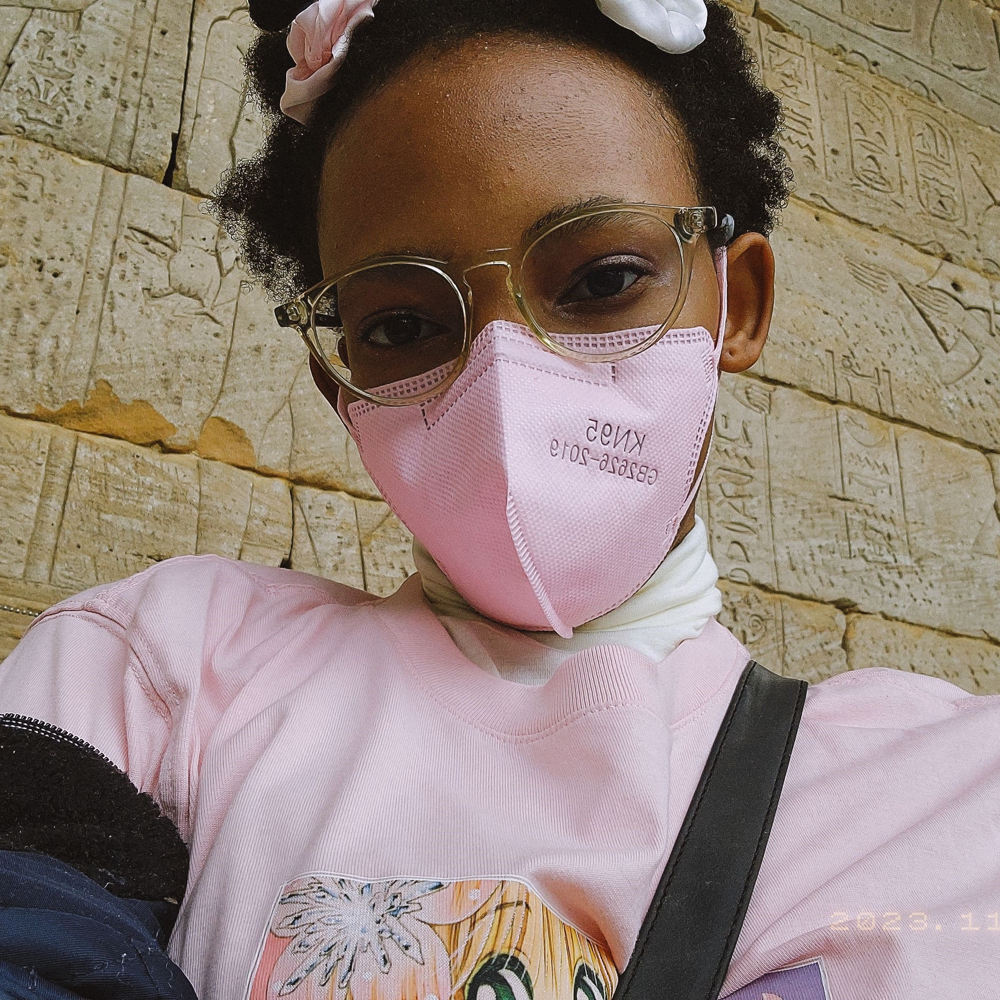

Hello everyone! My name is Rochelle, and I'm super excited to be taking this course. I am a junior majoring in Media Studies
with a concentration in Emerging Media.
I'm also a Computer Science minor. HTML and CSS are the first 2 coding languages
I've learned (about 7 years ago!) so I'm looking forward to refreshing my knowledge
and learning something new.
I'm also looking forward to learning about adding JavaScript to webpages, as that is something I've always wanted to learn
but never got the
chance to. Let's have a fun and productive spring semester!
Video Test
For the video I have put my favorite opening (Hikari Are) from one of my favorite animes (Haikyuu)! Enjoy!